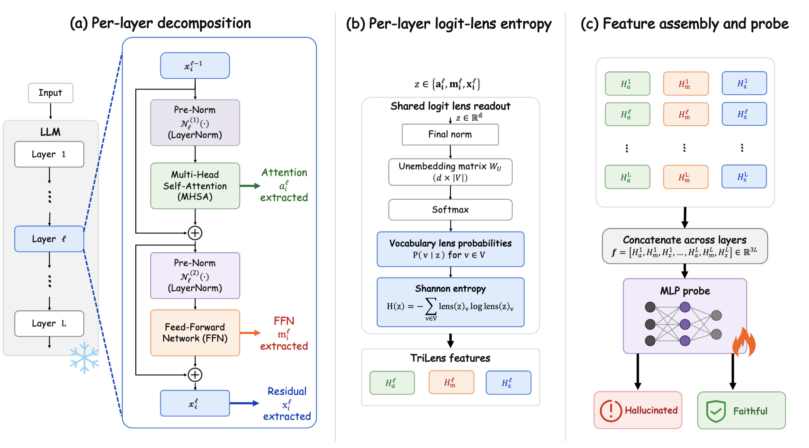
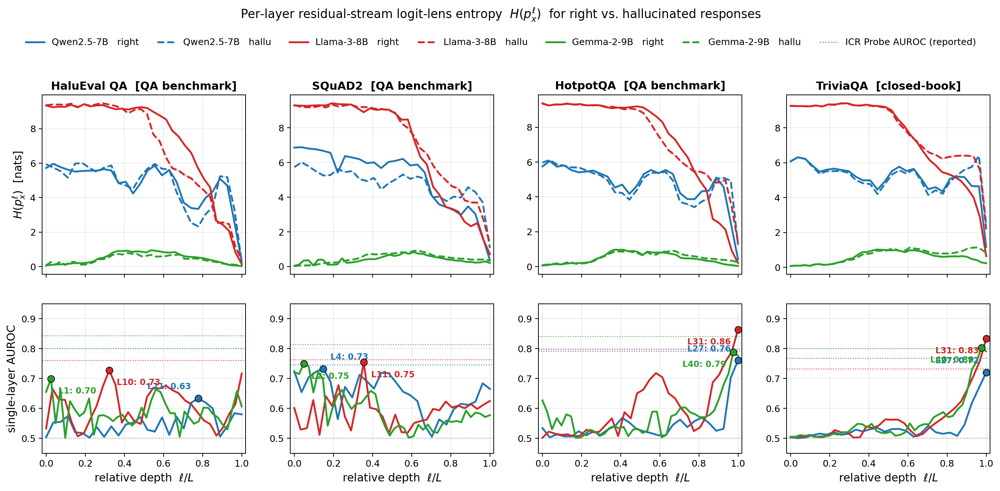
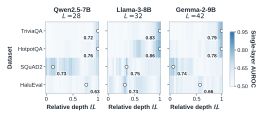
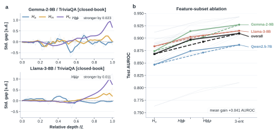
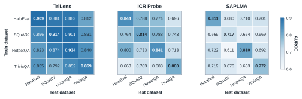

TriLens is a compact white-box hallucination detector that tracks how internal certainty forms across transformer depth by reading attention, feed-forward, and residual-stream states through the model's own logit lens.
When a language model hallucinates, the final answer is wrong, but the mistake is not necessarily invisible inside the model. Different internal pathways may remain uncertain, disagree in how quickly they sharpen, or commit to competing continuations before the output is produced.
TriLens turns this intuition into a compact representation: at every layer, it reads the multi-head self-attention output, the feed-forward output, and the residual stream through the model's own logit lens, then records only the entropy of each readout.
The resulting trajectory describes how certainty forms across depth and across modules, without storing high-dimensional hidden states or sampling multiple generations.
TriLens extracts three module-wise entropy trajectories from each decoder layer: attention-output entropy, feed-forward-output entropy, and residual-stream entropy. These lightweight signals are then aggregated and passed to simple probes for hallucination detection.

TriLens reads multiple internal computation paths through the model vocabulary lens and tracks their entropy across layers as a compact white-box signal.
Supported answers tend to show coordinated entropy sharpening across internal readouts, while hallucinated answers can retain higher, less stable, or less synchronized uncertainty across depth. Measuring entropy separately for attention, feed-forward, and residual pathways makes this behavior visible without learning over full hidden states.

Module-wise logit-lens entropy exposes how uncertainty enters and resolves along different computation pathways during generation.
The three entropy trajectories provide complementary evidence. Per-layer analyses show where the signal concentrates across model depth, while module-level comparisons reveal that attention, feed-forward, and residual readouts capture distinct aspects of hallucination-relevant uncertainty.

Layer-wise signal strength highlights where hallucination-relevant uncertainty emerges.

Attention, feed-forward, and residual-stream entropies provide complementary detection evidence.
Because TriLens stores compact entropy trajectories rather than high-dimensional activations, it supports lightweight probe training and comparison across datasets, models, and aggregation strategies.

TriLens evaluates whether module-wise entropy trajectories transfer across hallucination detection settings.
Citation information will be added after the paper is publicly available.
@misc{trilens2026,
title = {TriLens: Per-Layer Logit-Lens Entropy for White-Box Hallucination Detection},
author = {Anonymous},
year = {2026},
note = {EMNLP submission}
}